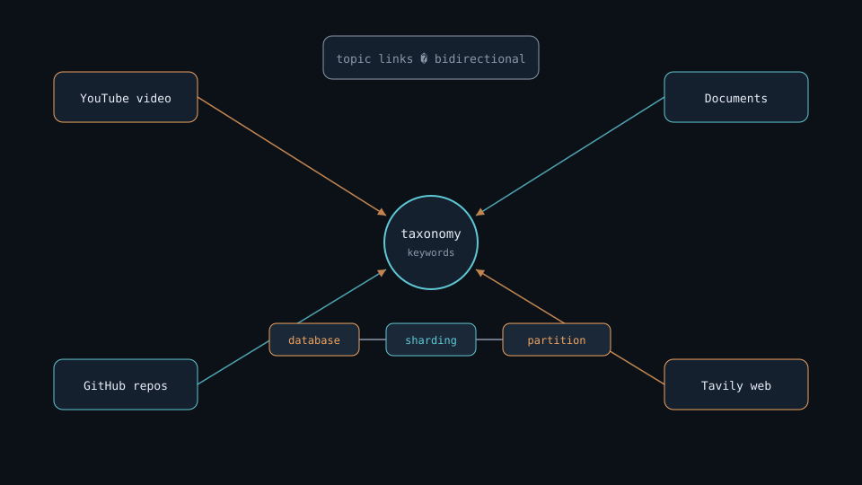

Concept · knowledge-basesibling repo
Personal Knowledge-base
Videos · docs · GitHub. Repo riêng ~/work-station/personal-kb — FTS search + Graph RAG. Hub AI Lab chỉ search notes.
notes (ai-lab)≠
videos / docs / stars→
knowledge-base
01notes/personal-knowledge-base.md
Whysplit
Hai lớp search
ai-lab hub
Notes only
docs/index.html — search notes · mở document · slides/demo khi có.
knowledge-base
Memory machine
YouTube · docs · GitHub stars · Graph RAG — chạy UI riêng trên :8765.
02không gộp vào một mega-deck
Picturegraph
Hình minh họa
03slides/assets/kb-graph-hero.png
Taxonomytopic graph
Keyword liên kết nội dung

Ví dụ chuỗi
database → sharding → partition → performance
Nguồn nuôi graph
- Video (title, tags, transcript)
- Documents / notes
- Starred GitHub repos
04bidirectional topic links
Searchtwo-way
Local first · hỏi lại · rồi Tavily

05miss → follow-up → external
Runsibling path
Chạy Personal Knowledge-base
index
Build
build-kb-index.pybuild-keyword-graph.py
ui
Serve
ui/server.py → :8765
search + graph
Chi tiết: note Personal Knowledge-base · README trong repo sibling.
06~/work-station/personal-kb